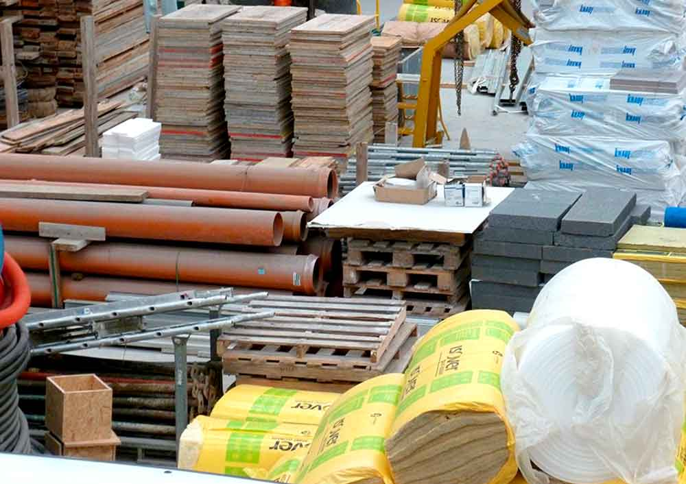

Materiales de construcción

1. Cemento
- Tipos: Existen varios tipos de cemento, como el cemento Portland (más común), cemento blanco, cemento rápido y cemento resistente a sulfatos.
- Usos: El cemento es el principal aglomerante para la fabricación de concreto, mortero y para unir bloques y ladrillos. Es indispensable en casi todos los proyectos de construcción, desde edificios hasta infraestructuras.
- Propiedades: Tiene una alta resistencia a compresión, pero es débil en tracción, por lo que suele necesitar refuerzo con acero (acero de refuerzo o varilla).
2. Concreto (Hormigón)
- Composición: El concreto se hace combinando cemento, agua, arena, grava o piedra triturada. Dependiendo de las proporciones de los componentes, se puede ajustar su resistencia.
- Usos: Se utiliza en la construcción de cimientos, columnas, losas, pavimentos, etc. Es un material de gran resistencia, tanto a la compresión como a la flexión.
- Tipos: Hay concreto premezclado (comprado en plantas) y hecho en obra (cuando se prepara en el lugar de construcción).
- Propiedades: Tiene una alta resistencia a la compresión, pero no resiste bien la tracción a menos que se use refuerzo con acero. Su resistencia y durabilidad dependen de la calidad de los materiales y su mezcla.
3. Ladrillos
- Tipos: Se pueden encontrar ladrillos de arcilla, cemento o autoclave (ladrillos livianos).
- Usos: Son comúnmente utilizados en muros, divisiones, fachadas, y en estructuras que requieren resistencia y durabilidad.
- Ventajas: Son materiales de bajo costo, bastante resistentes y proporcionan aislamiento térmico y acústico.
- Propiedades: Los ladrillos de arcilla, por ejemplo, tienen buena capacidad de aislamiento térmico, mientras que los de cemento son más duraderos pero menos aislantes.
4. Acero
- Tipos: El acero en la construcción suele ser acero de refuerzo (varilla) o acero estructural para estructuras metálicas.
- Usos: Es fundamental en las estructuras de gran altura, puentes, y proyectos que requieren resistencia estructural. El acero también es utilizado en puertas, ventanas, y elementos de cerramiento.
- Propiedades: El acero es fuerte y tiene una alta resistencia tanto a la compresión como a la tracción. Su mayor debilidad es la corrosión, por lo que a menudo se recubre o se trata para evitarlo.
5. Madera
- Tipos: Se utiliza principalmente la madera maciza y la madera contrachapada. Existen maderas duras (como el roble y nogal) y maderas blandas (como el pino).
- Usos: Se utiliza en carpintería, como vigas, postes, marcos, pisos, techos, y muebles. También se usa para hacer molduras y acabados decorativos.
- Ventajas: La madera es fácil de trabajar, tiene buena relación peso/resistencia y es un material natural y estéticamente atractivo.
- Desventajas: Tiene una mayor vulnerabilidad al fuego, a los insectos (como termitas) y a la humedad.
6. Vidrio
- Tipos: El vidrio templado (resistente a impactos), vidrio laminado (para seguridad), vidrio aislante (para mejorar el aislamiento térmico y acústico).
- Usos: Se utiliza principalmente en ventanas, fachadas, y cerramientos. También se usa en techos o elementos decorativos.
- Propiedades: El vidrio es transparente, lo que permite aprovechar la luz natural. Además, existen tipos de vidrio que ofrecen propiedades de aislamiento térmico y acústico.
7. Piedra Natural
- Tipos: Se utilizan piedras como granito, mármol, pizarra, piedra caliza, travertino.
- Usos: Es un material utilizado principalmente en acabados de fachadas, pavimentos, y en algunas estructuras, como muros de contención.
- Propiedades: La piedra es un material duradero, resistente y estéticamente atractivo. Sin embargo, su peso y costo suelen ser mayores que los de otros materiales.
8. Plástico y PVC
- Usos: El PVC (policloruro de vinilo) es ampliamente utilizado en la fabricación de tuberías, canalizaciones eléctricas, ventanas, puertas y acabados de interior. El polietileno y polipropileno son otros plásticos utilizados para aislamiento y en membranas impermeabilizantes.
- Ventajas: Son ligeros, fáciles de manejar, económicos y resistentes a la corrosión.
- Desventajas: El plástico no es tan duradero como materiales como el metal o la piedra. Además, no es tan resistente a las altas temperaturas.
9. Aislantes térmicos y acústicos
- Materiales comunes: Lana de vidrio, poliestireno expandido (EPS), espuma de poliuretano, celulosa y fibra de madera.
- Usos: Se usan principalmente en paredes, techos, y suelos para mejorar el aislamiento térmico y acústico de los edificios, creando un ambiente interior más confortable.
- Propiedades: Ayudan a reducir el consumo energético de los edificios, ya que mantienen el calor en invierno y el frescor en verano, y también reducen el ruido exterior.
10. Yeso
- Usos: Se utiliza principalmente en la construcción de tabiques interiores, cielos rasos (techos falsos) y acabados de paredes. También es común en la fabricación de molduras decorativas.
- Ventajas: Es fácil de aplicar, económico y tiene propiedades de aislamiento térmico.
- Desventajas: Puede ser menos duradero en zonas húmedas y es vulnerable a la humedad.
Tendencias en Materiales de Construcción
La sostenibilidad es una tendencia clave en la construcción moderna. Los materiales reciclados, como los ladrillos reciclados, el concreto reciclado, y los materiales de bajo impacto ambiental (como los materiales orgánicos) están ganando popularidad.
Además, los materiales inteligentes, como los vidrios fotovoltaicos (que generan electricidad) y los materiales de construcción que responden a las condiciones ambientales (como los materiales que mejoran el aislamiento según la temperatura), están comenzando a desempeñar un papel importante.